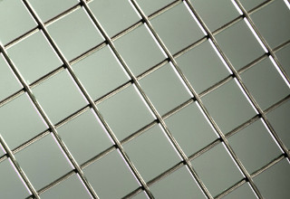

Dostępne w naszej ofercie siatki zgrzewane wykonane zostały z wykorzystaniem sprawdzonych technologii oraz optymalnie dobranych materiałów. Do ich wykonania użyte zostały druty czarne ze stali nierdzewnej (Inox) oraz druty w powłokach cynkowo-aluminiowych ZnAl(Bezinal, Crapal). Połączone są poprzez zgrzewanie metodą elektrycznego spawania oporowego na wielopunktowych automatach zgrzewających. Dzięki tej metodzie gotowe rozwiązania zyskują wyjątkową wytrzymałość. Jednocześnie nie generują wysokich kosztów w porównaniu do innego typu wypełnień.
Siatki zgrzewane z drutem brzegowym |
||
|---|---|---|
| oczko [mm] | średnica [mm] | format [mm] |
| 75x15 | 3 | 1350x2400 |
| 25x25 | 3 | 1000x2400 |
| 30x30 | 3 | 1020x2400 |
| 40x40 | 3 | 1000x2400 |
| 40x40 | 4 | 1000x2400 |
| 50x50 | 3 | 1000x2400 |
| 50x50 | 4 | 1000x2400 |
Siatki zgrzewane bez drutu brzegowego |
||
|---|---|---|
| oczko [mm] | średnica [mm] | format [mm] |
| 30x30 | 3 | 1000x2000 |
| 40x40 | 3 | 1000x2000 |
| 50x50 | 3 | 1000x2000 |
| 50x50 | 4 | 1000x2000 |
| 50x50 | 5 | 1000x2000 |
Różnice widoczne są w średnicach drutów, wybranych do wykonania całej konstrukcji. Dostępne w asortymencie rozwiązania posiadają także różnorodne powłoki dedykowane do odmiennych zastosowań. W przypadku trudności z doborem rozwiązania, chętnie udzielimy wskazówek, co do obszaru wykorzystania naszych produktów.